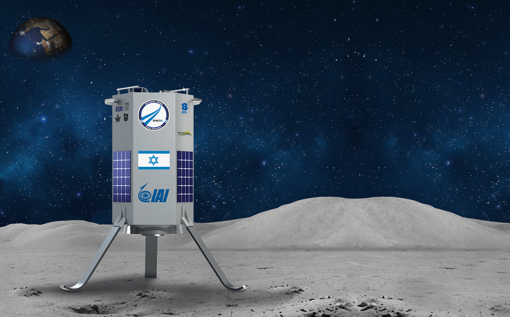

Blindtext
Space IL: Flying to the moon on a shoestring
The countdown is fast approaching for Israel's first mission to the moon. (SEE ORIGINAL)

The Israeli SpaceIL team, which is the only independent non-profit group taking part in Google’s Lunar X competition, is finalising preparations for its launch date due for the end of 2015 or extended to mid-2016 at the latest.
The project, made up of just 20 full-time staff and 250 volunteers, hopes to be not only the first Israeli capsule to make it to the moon, but also to do so on a seemingly impossible budget. In total the team are spending only $36 million or just under £22 million – an unheard of figure in the field of space exploration where nation-states routinely spend billions.
Daniel Saat, in charge of fundraising and business development at SpaceIL told the JC in London this week that so far the team has raised £13 million of the £22 million needed, including $1 million (£610,000) from British donors who wished to remain anonymous.
One of the Israeli team’s secrets in keeping costs so low is their unique expertise in developing tiny micro and nano-satellites. Mr Saat says that this stems from the unique geopolitical challenges Israel faces in the region.
“Most countries prefer to launch their satellites to the east due to the rotation of the earth, as it makes it easier to pick up velocity and get your satellite into orbit. Israel can’t launch satellites to the east because we have some unfriendly neighbours that don’t like to see what look like modified missiles flying over their territory,” he says.
“So out of a constraint, we have to launch our satellites west over the Mediterranean – this means that we have to make for the same amount of rocket fuel, we have to make the mass of the satellite smaller and smaller. Over the last twenty years as a country we’ve built the smallest, smartest satellites on earth. It’s a great example of how in Israel we look at a constraint and turn it into an advantage.”
Yariv Bash, one of the co-founders of SpaceIL says that if their craft makes it to the moon, they will also bring seeds and soil samples in their capsule. “We want to produce the first plants which are able to grow outside the earth,” he says.
SpaceIL is thought to be one of the main front-runners in the Google Lunar X prize which will net $30 million or over £18 million for the winning team. While their competitors have run into problems raising funds through sceptical corporate sponsors, the Israelis are again taking a different approach. On May 6th, Israel’s independence day, the team are also launching an extra online crowdfunding campaign with the aim of raising an additional $1 million. For only $18 dollars, funders will be able to receive the first image the spacecraft takes of the moon and speak to the founders by video conference.
“The message is you can track our progress and feel part of our mission for only $18,” says Mr Saat.
**UPDATE**
American casino magnate Sheldon Adelson has pledged $16.4 million (almost £10 million) to fund the Israeli SpaceIL mission to the moon.
The new lump-sum donation from the “Dr Miriam and Sheldon G. Adelson Family Foundation” now means that SpaceIL will have the remaining £10 million needed to push ahead with the mission.
Mr Adelson said: “As an entrepreneur, nothing is as thrilling as supporting a group of people who have been told that their dreams cannot be realized.”